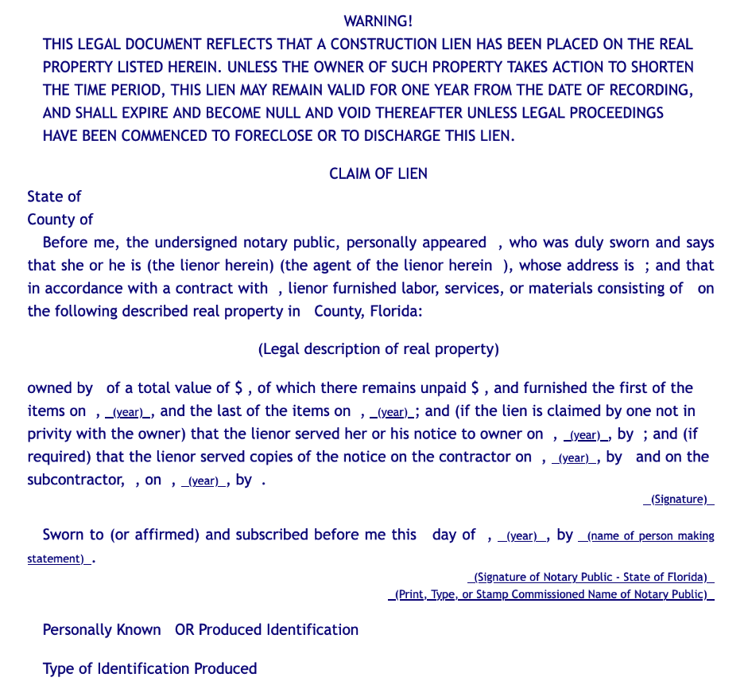

How to File a Construction Lien in Florida
Florida law provides contractors, suppliers, and other parties with the right to claim a lien against real property for work and supplies provided for improvements. Liens are a powerful tool for seeking payment, but can be complicated to use.
In Florida, liens are recorded in the county clerk's office for the county where the project is located. Liens can be recorded in person at the local county clerk's office. Additionally, many Florida counties have adopted electronic recording methods, such as Simplifile.
Florida law prescribes the form and substance that a claim of lien must adhere to. All lien claims in Florida must be in substantially the following form:

While seemingly simple, errors in the claim of lien can result in significant consequences, such as loss of the contractors lien rights. Therefore, it is advisable to seek the assistance of an attorney when preparing a claim of lien.
Warning: If you are claiming a lien on behalf of a business, you cannot prepare the lien yourself unless you are a licensed attorney. Doing so is considered unlicensed practice of law, which is a felony in the state of Florida.
After recording a claim of lien with the county clerk's office, the contractor must serve a copy to the owner within 15 days of doing so. Failure to serve a claim of lien within 15 days after recording will render the claim of lien voidable to the extent that the failure or delay is shown to have been prejudicial to any person entitled to rely on the service.
Recording a Construction Lien in Orange County, Florida
If you are recording a construction lien in Orange County, FL, the county has established several vendors who can handle your e-recording needs. The Orange County Comptroller’s Official Records Department also records documents in person at the following address:
109 E. Church St. Suite 300
Orlando, FL 32801
407-836-511
DISCLAIMER: The information provided on this website does not, and is not intended to, constitute legal advice; instead, all information, content, and materials available on this site are for general informational purposes only.